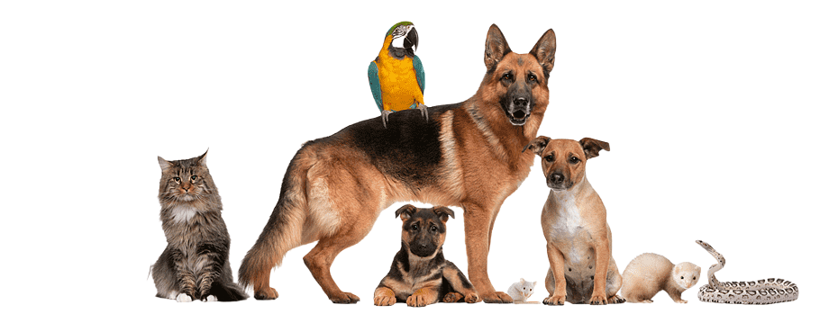

Welcome to Ango (Adopt a pet): Find Your New Best Friend Today!
Looking to adopt a pet? You’ve come to the right place! At Adopt-a-Pet, we make it easy for you to connect with shelters,
rescues, and foster homes to find your perfect furry companion.
Whether you're looking for a dog, cat, rabbit, or more, we have thousands of pets available for adoption.
How It Works:
- Browse Pets: Go to adopt in Navigation Bar or press "Adopt Now" down below! Then choose ur match.
- Meet Your Match: View detailed profiles, including photos, temperament, and health information to find the right fit for your family.
- Adopt: Reach out directly to the shelter or rescue organization to begin the adoption process. We’ll guide you every step of the way!
